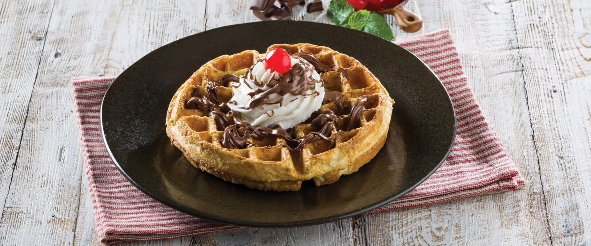

Waffles
Prep time:
10 mins
Yield:
10
Ingredients
2 cups all-purpose flour
1 teaspoon salt
4 tablespoon baking powder
2 tablespoon white sugar
2 eggs
1 1/2 cups warm milk
1/3 cup butter, melted
1 teaspoon vanilla extract
Steps
Gather all ingredients.
In a large bowl, mix flour, salt, baking powder and sugar.
In a separate bowl, beat the eggs. Stir in the milk, butter and vanilla.
Pour the milk mixture into the flour mixture; beat until blended.
Ladle the batter into a preheated waffle iron.
Cook the waffles until golden and crisp.
Serve immediately and enjoy!